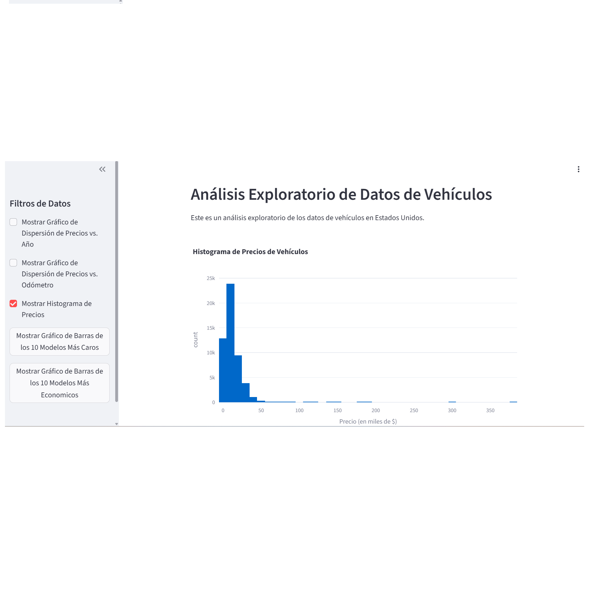

Daniel Pineda
I am a Mechatronical Engineer and Data Analyst with experience in Python, SQL, Tableau and Power Bi. I am always looking for new challenges and opportunities to grow in the field of engineering and data.
I am a Mechatronical Engineer and Data Analyst with experience in Python, SQL, Tableau and Power Bi. I am always looking for new challenges and opportunities to grow in the field of engineering and data.

Data-driven project for CallMeMaybe to identify and address inefficient virtual telephony operators. We Analyzed call data using EDA and statistical hypothesis testing to pinpoint performance gaps and recommend targeted operational improvements and training strategies.

Forensic audit of an abandoned A/B test for a new e-commerce recommender system. This project evaluates its impact on conversion at product page, cart, and purchase stages. It assesses experiment integrity, analyzes user behavior, and uses Z-tests to confirm statistical significance. Findings indicate the new system negatively impacted conversion.

Developed an integrated data analysis pipeline combining SQL for robust extraction and Python (Pandas) for refined calculation. I implemented a statistical threshold (minimum 50 ratings) to evaluate authors with significant readership, identifying the top 10 by average rating. This audit provides clear, actionable insights for inventory optimization and targeted marketing strategies for online book retailers.

Developed a machine learning pipeline to analyze and predict customer retention for a fitness center chain. Using Python (Pandas, Scikit-learn), I performed Exploratory Data Analysis (EDA) to identify key behavioral patterns of loyal versus churning members. I implemented predictive models to forecast churn probability, allowing for the creation of data-driven marketing clusters and targeted retention strategies. This project demonstrates the ability to transform raw operational data into actionable business intelligence to reduce customer attrition.
Conducted a comprehensive market analysis for "Zuber," a new ride-sharing company in Chicago. This project involved processing large datasets from SQL databases to identify top competitors and analyze trip frequency by neighborhood. I implemented rigorous Hypothesis Testing (T-tests) to determine the impact of external factors, such as weather conditions, on average trip duration from the Loop to O'Hare International Airport. This analysis provides data-driven evidence to optimize pricing models and operational launch strategies.
I analyzed a large dataset from "Megaline," a national telecom operator, to determine which prepaid plans generate more revenue. The project involved an extensive data cleaning process (ETL), handling missing values, and converting data types for efficient processing. I performed Exploratory Data Analysis (EDA) to profile user behavior—minutes, messages, and data usage—and conducted Hypothesis Testing (T-tests) to validate statistical differences between plans. These insights allow the company to adjust its marketing budget and optimize plan offerings based on real profitability.
I conducted an in-depth Exploratory Data Analysis (EDA) on a large-scale dataset from Instacart to uncover grocery shopping patterns. The project involved processing millions of orders to identify peak shopping hours, product reorder rates, and popular departments. I implemented data cleaning techniques to handle missing values and duplicates, and utilized advanced data visualization to translate complex shopping habits into actionable retail insights. This analysis helps in understanding customer loyalty and optimizing inventory management for digital marketplaces.
A web-based application built with Streamlit to transform static data into interactive insights. It enables users to perform real-time filtering and visual analysis, showcasing a focus on straightforward, high-value data tools.

I conducted a comprehensive marketing audit for "ShowZ," an entertainment ticketing platform, to evaluate the efficiency of customer acquisition channels. Using Python, I calculated key business KPIs including LTV (Lifetime Value), CAC (Customer Acquisition Cost), and ROMI (Return on Marketing Investment). I performed cohort analysis to track user retention and spending patterns over time, providing strategic recommendations to reallocate marketing budgets toward the most profitable sources and improve overall business unit economics.
I developed a data-driven framework to prioritize and validate business hypotheses for an online store. Using Python (Pandas, Scipy), I implemented the ICE and RICE prioritization frameworks to identify high-impact tasks with the lowest execution cost. I also designed and analyzed A/B tests, applying rigorous statistical methods to calculate p-values and confidence intervals. This ensured that any proposed website changes reached statistical significance, effectively reducing business risk and maximizing the return on marketing and development efforts.
I conducted a comprehensive analysis of the global video game industry to identify patterns of commercial success. By processing historical sales data across multiple regions (NA, EU, JP), I identified "killer apps" and analyzed the lifecycle of major consoles like PS4 and Xbox One. The project includes User and Critic Score correlation analysis, regional preference profiling, and sales forecasting based on platform longevity. This study demonstrates the ability to translate consumer trends into actionable insights for product development and marketing distribution.
A balanced toolkit combining engineering precision with data-driven decision making.
Advanced Python for data manipulation (Pandas, NumPy) and statistical analysis (SciPy).
Querying and managing relational databases with SQL (PostgreSQL, MySQL) for business intelligence.
Creating impactful dashboards with Streamlit, Matplotlib, Seaborn, and Power BI/Tableau.
Mechatronic systems design, automation, and technical project management with an 80/20 efficiency focus.
Predictive modeling, customer segmentation (Clustering), and A/B testing for revenue optimization.
Experience in unit economics (LTV, CAC, ROMI) and entrepreneurial opportunity assessment.